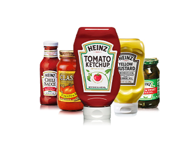

홈 > 브랜드 매거진 > 하인즈
하인즈
하인즈(Heinz)는 1869년 헨리 J. 하인즈가 미국 펜실베이니아주 샤프스버그에서 설립한 식품 회사로, 케첩을 비롯한 가공식품으로 유명하다. 2015년 크래프트 푸즈와의 합병으로 크래프트 하인즈가 출범했다.
산업 분야 식음료 · 공개 등급 편집 검수 · 브랜드 평가 4.7 ★


한눈에 보는 브랜드
하인즈(Heinz)는 1869년 헨리 J. 하인즈(Henry J.
Heinz)가 미국 펜실베이니아주 샤프스버그(피츠버그 인근)에서 설립한 식품 회사다. 1896년 도입된 '57 Varieties' 슬로건은 실제 제품 수와 무관하게 거의 임의로 정해진 숫자로, 신발 광고의 '21가지 스타일'에서 착안해 선택했다고 전해진다.
2015년 7월 크래프트 푸즈 그룹과의 합병으로 크래프트 하인즈(The Kraft Heinz Company)가 출범했으며, 하인즈는 그 산하 브랜드다.
시작과 성장
케첩으로 잘 알려진 브랜드 하인즈(Heinz)는 1869년, 헨리 하인즈가 미국 피츠버그에서 피클을 판매하면서 시작되었다. 그는 무엇보다 고객과의 신뢰를 중요하게 생각하여 고객들이 직접 내용물을 확인할 수 있도록 투명한 병을 사용하였다.
오늘날 세계적인 식품 브랜드로 성장한 하인즈는 현재까지 그 명성을 이어오고 있다.
브랜드 아이덴티티
하인즈의 핵심 시각 요소는 펜실베이니아주(별칭 '키스톤 스테이트')를 상징하는 키스톤(쐐기돌) 형태의 라벨이다. 키스톤 라벨 중앙에는 '57 varieties' 문구가 작은 글씨로 배치되며, 녹색 '하인즈 피클' 모티프와 함께 19세기부터 이어진 대표 표식으로 기능한다.
주색은 케첩에서 유래한 강렬한 적색(하인즈 레드)이며 보조색으로 녹색(피클 그린) 계열이 쓰인다. 워드마크는 오른쪽으로 약간 기운 둥글고 부드러운 커스텀 서체로, 라벨에서는 아치형으로 배열된다.
일부 자료가 언급하는 청록(터쿼이즈) 색상은 신뢰할 만한 복수 출처에서 확인되지 않는다.
제품과 서비스
하인즈는 케첩뿐만 아니라 파스타 소스, 데미그라스 소스 등을 출시하며 전 세계적으로 사랑받고 있다. 또한, 제품에 담긴 하인즈의 자부심을 전달하기 위해 제품 샘플을 적극적으로 배포하여 고객들의 신뢰를 쌓아왔고 이를 통해 가공 식품 사업의 선도 기업으로 자리매김했다.
Tomato Ketchup BIO, Tomato Ketchup, ベイクドビーンズ, Tomato ketchup
현재 상태
하인즈는 2015년 합병으로 설립된 크래프트 하인즈의 핵심 브랜드로 운영되며, '57 Varieties' 표기와 키스톤 라벨, 적색 정체성은 오늘날까지 케첩 등 주력 제품에 유지된다.